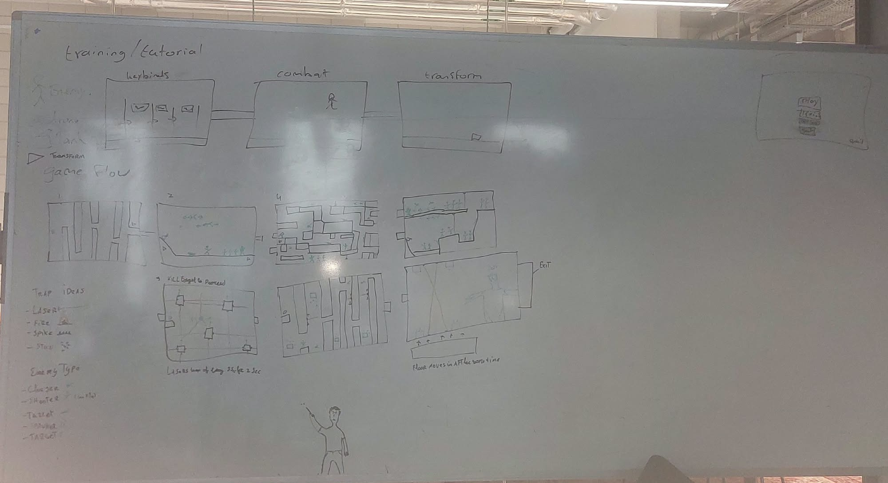
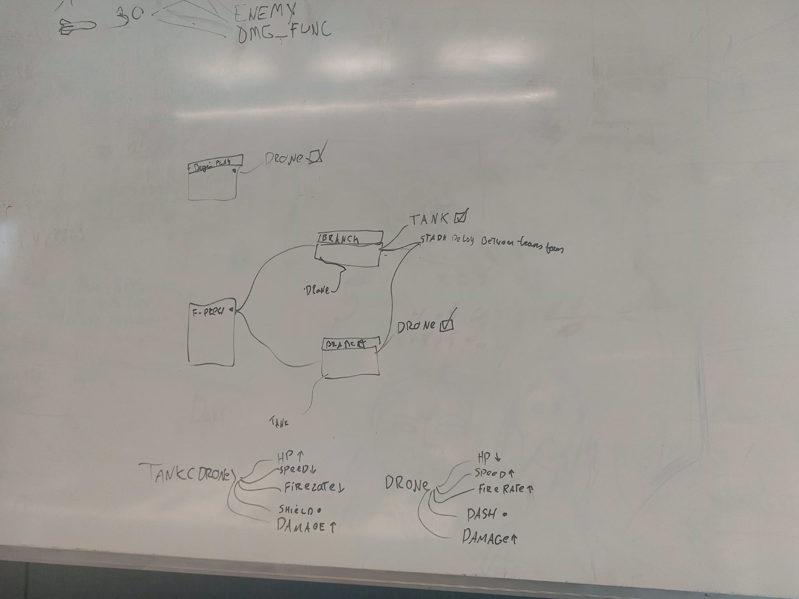

First design
For this project, I was tasked with creating the player movement for a 2.5D side-scroller. I hadn't heard of this type of game before I was only familiar with 2D side-scrollers like Mario. The concept involved controlling a drone/spacecraft that flies through a space base. The player has the ability to transform between a drone and a heavy space vehicle. For this project, I developed the classes for both of these forms.